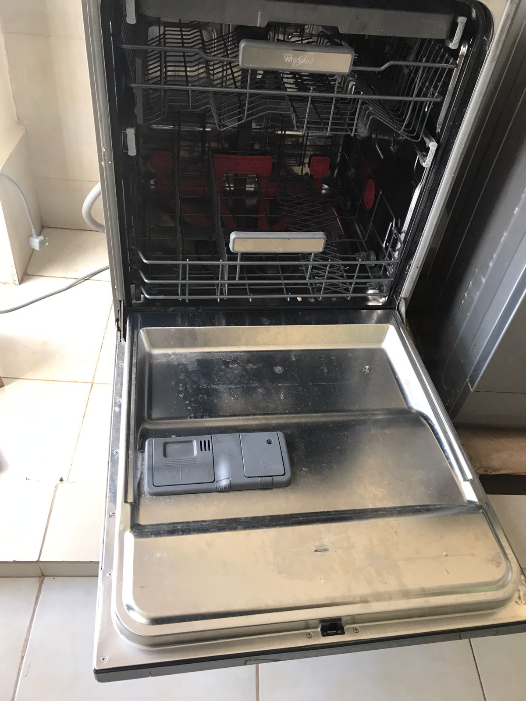
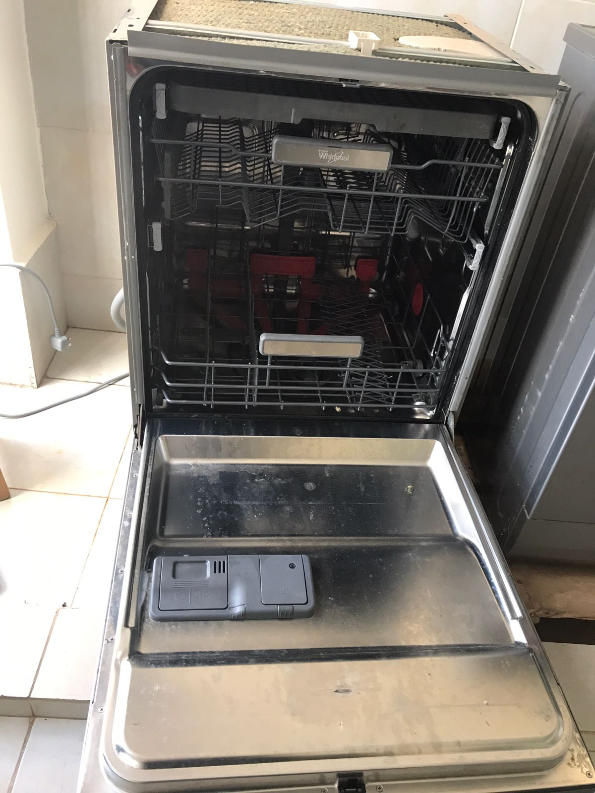
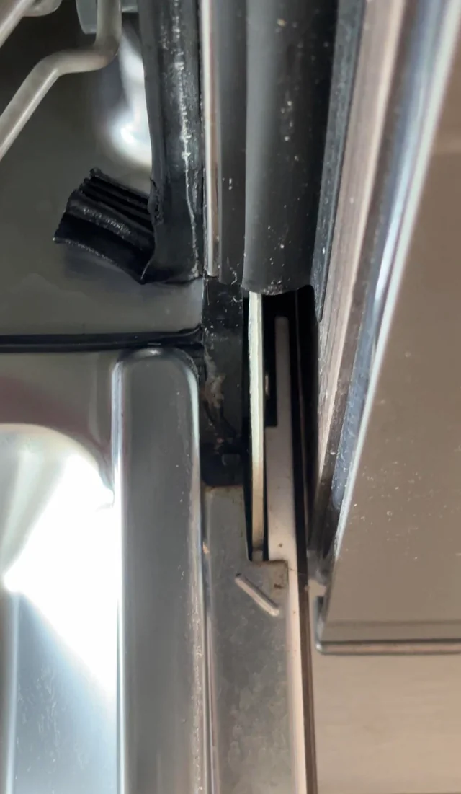
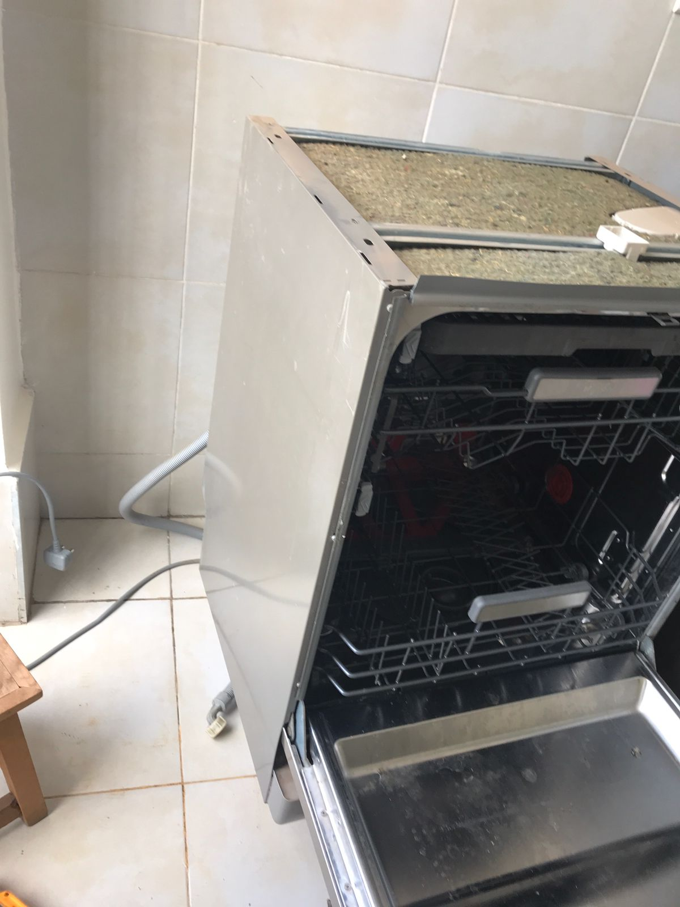

Dishwasher Repair in Nairobi — Common Faults, All Brands & Repair Guide
Is your dishwasher leaking, not draining, or leaving dishes dirty? Quelle Technologies Limited provides professional, same-day dishwasher repair services across Nairobi. We fix all brands, carry genuine spare parts, and offer a warranty on every repair.

Our technicians diagnose and fix all dishwasher faults on-site in your home or business.
1. Types of Dishwashers We Repair
We service all types of dishwashers used in homes, restaurants, hotels, and commercial kitchens across Nairobi.
Freestanding
Standard units found in most Nairobi homes.
Built-in/Integrated
Integrated units that match your kitchen cabinetry.
Countertop/Tabletop
Compact units for small apartments and offices.
Commercial/Rack
High-capacity units for restaurants and hotels.
Drawer dishwasher
Single or double drawer pull-out dishwasher designs
Slimline
Narrow 45cm units designed for smaller kitchen spaces
2. Common Dishwasher Faults We Fix
If your dishwasher is showing an error code or simply not performing, here are the most common issues our technicians resolve daily in Nairobi.
a) Dishwasher Not Draining
Water sitting at the bottom of the dishwasher after a cycle is one of the most common calls we receive in Nairobi. It almost always has a straightforward mechanical cause.
| # | Cause | Fix |
|---|---|---|
| 1 | Blocked or clogged filter at the base of the tub | Remove, clean, and reinstall filter — often solves it immediately |
| 2 | Clogged drain hose — food debris blocking the hose | Disconnect, flush, and clear blockage from hose |
| 3 | Failed drain pump motor | Test pump with multimeter, replace pump motor if failed |
| 4 | Faulty check valve / drain valve | Check valve prevents backflow — replace if stuck closed |
| 5 | Blocked air gap or garbage disposal connection | Clear air gap or check garbage disposal knockout plug |
.jpeg) Drain pump inspection and replacement
Drain pump inspection and replacement
 Internal inspection — spray arms, filter, and wash pump
Internal inspection — spray arms, filter, and wash pump
b) Dishwasher Not Cleaning Dishes Properly
Dishes come out dirty, greasy, or with food still stuck on them despite a full wash cycle.
| # | Cause | Fix |
|---|---|---|
| 1 | Blocked spray arms — holes clogged with mineral deposits or food | Remove spray arms, clear all holes with a toothpick, rinse thoroughly |
| 2 | Worn or failed wash pump / circulation pump | Test pump, replace if motor has failed or pressure is too low |
| 3 | Faulty water inlet valve — not enough water entering | Test valve solenoid, replace inlet valve |
| 4 | Low water temperature — heater element failed | Test heating element, replace if burnt out |
| 5 | Incorrect detergent or wrong amount | Use dishwasher-specific detergent; check manufacturer recommendation |
| 6 | Overloading — dishes blocking spray arm rotation | Load correctly; ensure arms can spin freely before starting cycle |
c) Dishwasher Leaking Water
Water on the kitchen floor is an urgent fault — prolonged leaking damages flooring, cabinets, and can create an electrical hazard.
- Damaged door seal / gasket — the rubber seal around the door has split or warped; replace the door gasket
- Leaking door latch — door not closing fully allows water to spray out; adjust or replace latch
- Cracked spray arm — water sprays sideways instead of upwards; replace the spray arm
- Loose or damaged water inlet hose — connection at back of machine leaking; tighten or replace hose
- Faulty water inlet valve — valve not shutting off properly, causing overflow; replace valve
- Too much detergent / wrong detergent — excessive foam causes overflow through the door; use correct dosage
- Cracked tub or wash arm housing — rare but requires component replacement
d) Dishwasher Not Filling with Water
- Water inlet valve failed — solenoid valve not opening to let water in; test and replace
- Kinked or pinched water supply hose — check the hose at the back of the unit
- Float switch stuck in "full" position — the float assembly tells the machine the tub is full when it isn't; clean or replace float
- Water pressure too low — minimum 0.5 bar required; check home water pressure
- Control board not sending signal to inlet valve — board fault requires diagnosis and possible replacement
e) Door Not Closing or Latching
- Broken door latch assembly — the most common cause; latch hook or catch has broken; replace latch
- Worn or stretched door hinges — door hangs low and won't align with the latch; adjust or replace hinges
- Faulty door latch switch — machine won't start even if door is closed; the switch that confirms closure has failed
- Warped door seal — thick seal prevents door from fully closing; replace the gasket
f) Dishes Not Drying
- Heating element failed — the element that heats air during the dry cycle has burnt out; replace element
- Rinse aid dispenser empty or faulty — rinse aid is essential for drying; refill or replace dispenser
- Thermostat fault — not reaching the correct temperature for drying; test and replace thermostat
- Fan motor failed — on models with fan-assisted drying; replace fan motor
g) Bad Smell from Dishwasher
- Dirty or clogged filter — food particles trapped in filter rot and smell; clean filter monthly
- Blocked drain hose — stagnant water trapped in hose creates odour; flush and clear hose
- Mould inside door seal — dark mould grows in the rubber gasket folds; clean with white vinegar
- Dirty spray arms — food trapped inside spray arm holes; remove and clean thoroughly
h) Noisy Dishwasher
- Grinding noise — food debris or broken glass in the pump; clear debris, check pump for damage
- Thumping or banging — spray arm hitting dishes or tall items in rack; reload dishes to allow arm to spin freely
- Humming or buzzing — normal during wash cycle, but loud hum indicates a failing pump motor
- Rattling — loose cutlery or small items not secured in basket; secure items before running cycle

Spray arm cleaning & inspection
Door seal / gasket inspection Electrical component testing
Electrical component testing
3. How a Dishwasher Works
Understanding how your dishwasher works helps explain why faults occur and what our technicians look for during diagnosis.
At the start of a cycle, the water inlet valve opens to let in hot water from your supply. The circulation pump pressurises this water and forces it up through the spray arms, which rotate and spray water over the dishes. Detergent is released from the dispenser mid-cycle. After washing, the drain pump removes dirty water, and the heating element (or fan, depending on model) dries the dishes.
All of this is controlled by the control board, which sequences each stage of the cycle according to the programme selected. A fault in any one component can stop the whole machine — or cause it to run a cycle without properly cleaning or draining.

Inside a dishwasher — spray arms, lower rack, and filter Control panel & programme selection
Control panel & programme selection
4. Dishwasher Brands We Repair in Nairobi
We repair all dishwasher brands available in Kenya. Here are the most common brands and their known weak points.
| Brand | Known Weak Point | Our Fix |
|---|---|---|
| Samsung · LG | Control board failures from power surges; door latch cracks after heavy use |
Inspect board for burnt components; replace latch assembly
✓ Always use a surge protector
|
| Bosch · Siemens · Neff | Circulation pump seal failures; aqua-stop hose valve triggering false flood warnings |
Replace pump seal or full pump; reset or replace aqua-stop valve
✓ Spare parts available for German brands
|
| Hotpoint · Indesit · Ariston | Heating element failure; spray arm bearings wear out; door hinge springs break |
Replace element; replace spray arm; install new hinge spring kit
✓ Common parts stocked on every call
|
| Hisense · Bruhm · Midea | Drain pump failures after 2–3 years; door seals degrade faster in hot climates |
Replace drain pump; replace door gasket with upgraded seal
✓ Same-day pump replacement available
|
| Beko · Electrolux · Candy | Water inlet valve solenoids fail; control module errors displayed frequently |
Replace inlet valve solenoid; reset or replace control module
✓ Error code diagnosis included
|
5. How We Diagnose Your Dishwasher
Every Quelle Technologies technician follows the same structured diagnostic process — no guesswork, no unnecessary parts replaced.
-
Visual Inspection
Check for obvious damage — cracked door seal, blocked filter, visible leaks, or burnt marks.
- Power CheckConfirm 240V at socket. Check if the machine responds to programme selection. Note any error codes on the display.
- Water Supply CheckConfirm the water supply tap is open and hose is not kinked. Test water pressure at the inlet.
- Filter & Spray Arm InspectionRemove and inspect filter for blockages. Remove spray arms and check all holes are clear.
- Pump TestingRun drain cycle to listen to drain pump. Run wash cycle to test circulation pump pressure and noise.
- Electrical Component TestingTest heating element, inlet valve solenoid, door latch switch, and thermostat with a multimeter.
- Full Cycle TestAfter repair, run a full wash cycle to confirm everything is working — draining, filling, washing, and drying — before we leave.
 Fast response — same day across Nairobi
Fast response — same day across Nairobi
 On-site repair in your kitchen
On-site repair in your kitchen
 Every repair tested before we leave
Every repair tested before we leave
6. Is It Worth Repairing My Dishwasher?
In most cases, yes. Dishwashers are worth repairing when the fault is mechanical or electrical — which covers the vast majority of failures. Here's a practical guide.
| Fault | Repair Cost | Worth Repairing? |
|---|---|---|
| Blocked filter / spray arm | Very low | ✅ Always worth it |
| Door seal / gasket | Low | ✅ Always worth it |
| Door latch / hinge | Low | ✅ Always worth it |
| Water inlet valve | Low–Medium | ✅ Worth repairing |
| Drain pump replacement | Medium | ✅ Worth repairing in most cases |
| Heating element | Medium | ✅ Worth repairing |
| Circulation pump | Medium–High | ⚠️ Compare to unit age and cost |
| Control board | Medium–High | ⚠️ We advise honestly before proceeding |
| Cracked tub | High | ❌ Usually not worth repairing |
We always give a clear, honest quote before starting. If the repair cost is more than 60% of the price of a new unit, we will tell you — and help you make the right decision.
7. Dishwasher Maintenance — Every 1–3 Months
Regular maintenance keeps your dishwasher cleaning effectively, smelling fresh, and lasting longer. We offer maintenance contracts for homes, restaurants, and hotels across Nairobi.
8. Tips to Extend Your Dishwasher's Life
- Clean the filter monthly. It takes 2 minutes and prevents most "not draining" and "not cleaning" faults entirely.
- Use the correct detergent and rinse aid. Regular dish soap creates too much foam and damages the pump seals over time.
- Don't overload. Overloading blocks spray arms from rotating and means water can't reach all surfaces properly.
- Scrape plates — don't pre-rinse. Scrape off solid food but leave a light residue — modern dishwasher detergent needs something to work against or it over-foams.
- Run a hot cycle regularly. Run the hottest programme at least once a week to prevent grease and bacteria buildup in the drain hose and pump.
- Leave the door slightly open after a cycle. This lets the interior dry out and prevents mould growth on the door seal.
- Use a surge protector. Power surges in Nairobi damage control boards — especially in Samsung and LG dishwashers.
- Don't ignore error codes. Error codes on the display point directly to the faulty component. Note the code and call us — it speeds up diagnosis significantly.
9. Frequently Asked Questions
Most likely a blocked filter, clogged drain hose, failed drain pump, or faulty check valve. Start by removing and cleaning the filter at the base of the tub — this solves the problem in many cases. If it persists, call 0742 245720 for same-day diagnosis.
Usually blocked spray arms, insufficient water pressure, a failing circulation pump, or a burnt-out heating element not reaching wash temperature. Clean the spray arms first — clear all the small holes with a toothpick. If that doesn't help, call 0742 245720.
All brands — Samsung, LG, Bosch, Siemens, Whirlpool, Hotpoint, Mika, Hisense, Bruhm, Midea, Electrolux, Beko, Indesit, Ariston, Candy, Neff, AEG, Zanussi, and all generic units available in Kenya.
In most cases, yes. Pump, valve, seal, door latch, and heating element repairs are all far cheaper than buying a new unit. We give you an honest quote before starting — and if it's not worth repairing, we'll tell you.
Cost depends on the fault. Simple jobs like clearing a blocked filter or replacing a door seal are very affordable. We always provide a clear quote before any work begins — no hidden charges. Call 0742 245720 for a free phone diagnosis.
Yes. We are open 24 hours, 7 days a week and carry the most common dishwasher spare parts on every call — drain pumps, inlet valves, door seals, latch assemblies, heating elements, and more. Same-day repair is available for most faults.
Yes. We service commercial rack dishwashers and undercounter units for restaurants, hotels, canteens, and schools. We also offer maintenance contracts for commercial kitchens. Call 0742 245720 to discuss.